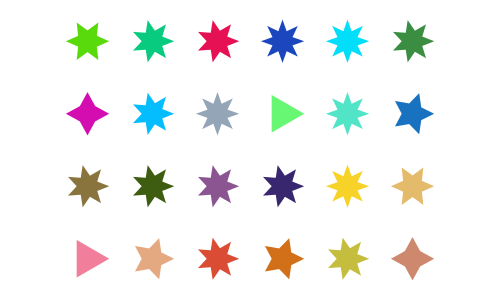
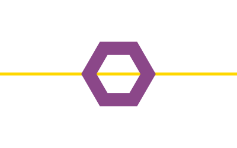
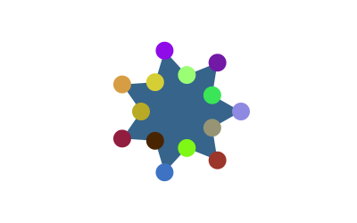
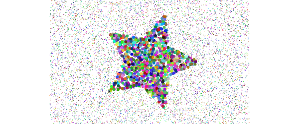
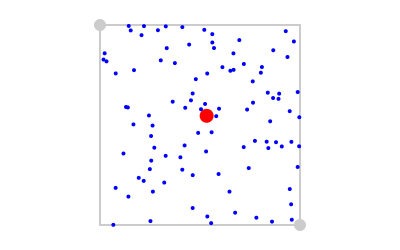
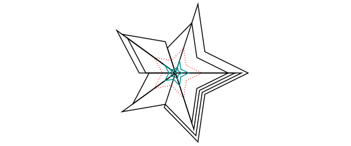

Polygons and shapes
Regular polygons ("ngons")
You can make regular polygons — from triangles, pentagons, hexagons, septagons, heptagons, octagons, nonagons, decagons, and on-and-on-agons — with ngon().

using Luxor, Colors
Drawing(1200, 1400)
origin()
cols = diverging_palette(60, 120, 20) # hue 60 to hue 120
background(cols[1])
setopacity(0.7)
setline(2)
ngon(0, 0, 500, 8, 0, :clip)
for y in -500:50:500
for x in -500:50:500
setcolor(cols[rand(1:20)])
ngon(x, y, rand(20:25), rand(3:12), 0, :fill)
setcolor(cols[rand(1:20)])
ngon(x, y, rand(10:20), rand(3:12), 0, :stroke)
end
end
finish()
preview()Luxor.ngon — Function.ngon(x, y, radius, sides=5, orientation=0, action=:nothing;
vertices=false, reversepath=false)Find the vertices of a regular n-sided polygon centred at x, y:
ngon() draws the shapes: if you just want the raw points, use keyword argument vertices=true, which returns the array of points instead. Compare:
ngon(0, 0, 4, 4, 0, vertices=true) # returns the polygon's points:
4-element Array{Luxor.Point,1}:
Luxor.Point(2.4492935982947064e-16,4.0)
Luxor.Point(-4.0,4.898587196589413e-16)
Luxor.Point(-7.347880794884119e-16,-4.0)
Luxor.Point(4.0,-9.797174393178826e-16)whereas
ngon(0, 0, 4, 4, 0, :close) # draws a polygonngon(centerpos, radius, sides=5, orientation=0, action=:nothing;
vertices=false,
reversepath=false)Draw a regular polygon centred at point p:
Stars
Use star() to make a star. You can draw it immediately, or use the points it can create.
tiles = Tiler(400, 300, 4, 6, margin=5)
for (pos, n) in tiles
randomhue()
star(pos, tiles.tilewidth/3, rand(3:8), 0.5, 0, :fill)
end
The ratio determines the length of the inner radius compared with the outer.
tiles = Tiler(500, 250, 1, 6, margin=10)
for (pos, n) in tiles
star(pos, tiles.tilewidth/2, 5, rescale(n, 1, 6, 1, 0), 0, :stroke)
end
Luxor.star — Function.star(xcenter, ycenter, radius, npoints=5, ratio=0.5, orientation=0, action=:nothing;
vertices = false,
reversepath=false)Make a star. ratio specifies the height of the smaller radius of the star relative to the larger.
Use vertices=true to return the vertices of a star instead of drawing it.
star(center, radius, npoints=5, ratio=0.5, orientation=0, action=:nothing;
vertices = false, reversepath=false)Draw a star centered at a position:
Polygons
A polygon is an array of Points. Use poly() to draw lines connecting the points or fill the area:
tiles = Tiler(600, 250, 1, 2, margin=20)
tile1, tile2 = collect(tiles)
randompoints = [Point(rand(-100:100), rand(-100:100)) for i in 1:10]
gsave()
translate(tile1[1])
poly(randompoints, :stroke)
grestore()
gsave()
translate(tile2[1])
poly(randompoints, :fill)
grestore()
Luxor.poly — Function.Draw a polygon.
poly(pointlist::Array, action = :nothing;
close=false,
reversepath=false)A polygon is an Array of Points. By default poly() doesn't close or fill the polygon, to allow for clipping.
A polygon can contain holes. The reversepath keyword changes the direction of the polygon. The following piece of code uses ngon() to make and draw two paths, the second forming a hole in the first, to make a hexagonal bolt shape:
setline(5)
sethue("gold")
line(Point(-200, 0), Point(200, 0), :stroke)
sethue("orchid4")
ngon(0, 0, 60, 6, 0, :path)
newsubpath()
ngon(0, 0, 40, 6, 0, :path, reversepath=true)
fillstroke()
The prettypoly() function can place graphics at each vertex of a polygon. After the polygon action, the supplied vertexfunction function is evaluated at each vertex. For example, to mark each vertex of a polygon with a randomly-colored circle:
apoly = star(O, 70, 7, 0.6, 0, vertices=true)
prettypoly(apoly, :fill, () ->
begin
randomhue()
circle(O, 10, :fill)
end,
close=true)
An optional keyword argument vertexlabels lets you pass a function that can number each vertex. The function can use two arguments, the current vertex number, and the total number of points in the polygon:
apoly = star(O, 80, 5, 0.6, 0, vertices=true)
prettypoly(apoly,
:stroke,
vertexlabels = (n, l) -> (text(string(n, " of ", l), halign=:center)),
close=true)
Luxor.prettypoly — Function.prettypoly(points, action=:nothing, vertexfunction=() -> circle(O, 1, :fill);
close=false,
reversepath=false,
vertexlabels = (n, l) -> ()
)Draw the polygon defined by points, possibly closing and reversing it, using the current parameters, and then evaluate the vertexfunction function at every vertex of the polygon. For example, you can mark each vertex of a polygon with a randomly colored filled circle.
p = star(O, 70, 7, 0.6, 0, vertices=true)
prettypoly(p, :fill, () ->
begin
randomhue()
circle(O, 10, :fill)
end,
close=true)The optional keyword argument vertexlabels lets you supply a function with two arguments that can access the current vertex number and the total number of vertices at each vertex. For example, you can label the vertices of a triangle "1 of 3", "2 of 3", and "3 of 3" using:
prettypoly(triangle, :stroke,
vertexlabels = (n, l) -> (text(string(n, " of ", l))))Recursive decoration is possible:
decorate(pos, p, level) = begin
if level < 4
randomhue();
scale(0.25, 0.25)
prettypoly(p, :fill, () -> decorate(pos, p, level+1), close=true)
end
end
apoly = star(O, 100, 7, 0.6, 0, vertices=true)
prettypoly(apoly, :fill, () -> decorate(O, apoly, 1), close=true)
Polygons can be simplified using the Douglas-Peucker algorithm (non-recursive version), via simplify().
sincurve = [Point(6x, 80sin(x)) for x in -5pi:pi/20:5pi]
prettypoly(collect(sincurve), :stroke,
() -> begin
sethue("red")
circle(O, 3, :fill)
end)
text(string("number of points: ", length(collect(sincurve))), 0, 100)
translate(0, 200)
simplercurve = simplify(collect(sincurve), 0.5)
prettypoly(simplercurve, :stroke,
() -> begin
sethue("red")
circle(O, 3, :fill)
end)
text(string("number of points: ", length(simplercurve)), 0, 100)
Luxor.simplify — Function.Simplify a polygon:
simplify(pointlist::Array, detail=0.1)detail is the smallest permitted distance between two points in pixels.
The isinside() function returns true if a point is inside a polygon.
setline(0.5)
apolygon = star(O, 100, 5, 0.5, 0, vertices=true)
for n in 1:10000
apoint = randompoint(Point(-200, -150), Point(200, 150))
randomhue()
isinside(apoint, apolygon) ? circle(apoint, 3, :fill) : circle(apoint, .5, :stroke)
end
Luxor.isinside — Function.isinside(p, pol)Is a point p inside a polygon pol? Returns true or false.
This is an implementation of the Hormann-Agathos (2001) Point in Polygon algorithm
You can use randompoint() and randompointarray() to create a random Point or list of Points.
pt1 = Point(-100, -100)
pt2 = Point(100, 100)
sethue("gray80")
map(pt -> circle(pt, 6, :fill), (pt1, pt2))
box(pt1, pt2, :stroke)
sethue("red")
circle(randompoint(pt1, pt2), 7, :fill)
sethue("blue")
map(pt -> circle(pt, 2, :fill), randompointarray(pt1, pt2, 100))
Luxor.randompoint — Function.randompoint(lowpt, highpt)Return a random point somewhere inside the rectangle defined by the two points.
randompoint(lowx, lowy, highx, highy)Return a random point somewhere inside a rectangle defined by the four values.
Luxor.randompointarray — Function.randompointarray(lowpt, highpt, n)Return an array of n random points somewhere inside the rectangle defined by two points.
randompointarray(lowx, lowy, highx, highy, n)Return an array of n random points somewhere inside the rectangle defined by the four coordinates.
There are some experimental polygon functions. These don't work well for polygons that aren't simple or where the sides intersect each other, but they sometimes do a reasonable job. For example, here's polysplit():
s = squircle(O, 60, 60, vertices=true)
pt1 = Point(0, -120)
pt2 = Point(0, 120)
line(pt1, pt2, :stroke)
poly1, poly2 = polysplit(s, pt1, pt2)
randomhue()
poly(poly1, :fill)
randomhue()
poly(poly2, :fill)Luxor.polysplit — Function.polysplit(p, p1, p2)Split a polygon into two where it intersects with a line. It returns two polygons:
(poly1, poly2)This doesn't always work, of course. For example, a polygon the shape of the letter "E" might end up being divided into more than two parts.
Luxor.polysortbydistance — Function.Sort a polygon by finding the nearest point to the starting point, then the nearest point to that, and so on.
polysortbydistance(p, starting::Point)You can end up with convex (self-intersecting) polygons, unfortunately.
Luxor.polysortbyangle — Function.Sort the points of a polygon into order. Points are sorted according to the angle they make with a specified point.
polysortbyangle(pointlist::Array, refpoint=minimum(pointlist))The refpoint can be chosen, but the minimum point is usually OK too:
polysortbyangle(parray, polycentroid(parray))Luxor.polycentroid — Function.Find the centroid of simple polygon.
polycentroid(pointlist)Returns a point. This only works for simple (non-intersecting) polygons.
You could test the point using isinside().
Smoothing polygons
Because polygons can have sharp corners, the experimental polysmooth() function attempts to insert arcs at the corners and draw the result.
The original polygon is shown in red; the smoothed polygon is shown on top:
tiles = Tiler(600, 250, 1, 5, margin=10)
for (pos, n) in tiles
p = star(pos, tiles.tilewidth/2 - 2, 5, 0.3, 0, vertices=true)
setdash("dot")
sethue("red")
prettypoly(p, close=true, :stroke)
setdash("solid")
sethue("black")
polysmooth(p, n * 2, :fill)
end
The final polygon shows that you can get unexpected results if you attempt to smooth corners by more than the possible amount. The debug=true option draws the circles if you want to find out what's going wrong, or if you want to explore the effect in more detail.
p = star(O, 60, 5, 0.35, 0, vertices=true)
setdash("dot")
sethue("red")
prettypoly(p, close=true, :stroke)
setdash("solid")
sethue("black")
polysmooth(p, 40, :fill, debug=true)
Luxor.polysmooth — Function.polysmooth(points, radius, action=:action; debug=false)Make a closed path from the points and round the corners by making them arcs with the given radius. Execute the action when finished.
The arcs are sometimes different sizes: if the given radius is bigger than the length of the shortest side, the arc can't be drawn at its full radius and is therefore drawn as large as possible (as large as the shortest side allows).
The debug option also draws the construction circles at each corner.
Offsetting polygons
The experimental offsetpoly() function constructs an outline polygon outside or inside an existing polygon. In the following example, the dotted red polygon is the original, the black polygons have positive offsets and surround the original, the cyan polygons have negative offsets and run inside the original. Use poly() to draw the result returned by offsetpoly().
p = star(O, 45, 5, 0.5, 0, vertices=true)
sethue("red")
setdash("dot")
poly(p, :stroke, close=true)
setdash("solid")
sethue("black")
poly(offsetpoly(p, 20), :stroke, close=true)
poly(offsetpoly(p, 25), :stroke, close=true)
poly(offsetpoly(p, 30), :stroke, close=true)
poly(offsetpoly(p, 35), :stroke, close=true)
sethue("darkcyan")
poly(offsetpoly(p, -10), :stroke, close=true)
poly(offsetpoly(p, -15), :stroke, close=true)
poly(offsetpoly(p, -20), :stroke, close=true)
The function is intended for simple cases, and it can go wrong if pushed too far. Sometimes the offset distances can be larger than the polygon segments, and things will start to go wrong. In this example, the offset goes so far negative that the polygon overshoots the origin, becomes inverted and starts getting larger again.

Luxor.offsetpoly — Function.offsetpoly(path::Array, d)Return a polygon that is offset from a polygon by d units.
The incoming set of points path is treated as a polygon, and another set of points is created, which form a polygon lying d units away from the source poly.
Polygon offsetting is a topic on which people have written PhD theses and published academic papers, so this short brain-dead routine will give good results for simple polygons up to a point (!). There are a number of issues to be aware of:
very short lines tend to make the algorithm 'flip' and produce larger lines
small polygons that are counterclockwise and larger offsets may make the new polygon appear the wrong side of the original
very sharp vertices will produce even sharper offsets, as the calculated intersection point veers off to infinity
Fitting splines
The experimental polyfit() function constructs a B-spline that follows the points approximately.
pts = [Point(x, rand(-100:100)) for x in -280:30:280]
setopacity(0.7)
sethue("red")
prettypoly(pts, :none, () -> circle(O, 5, :fill))
sethue("darkmagenta")
poly(polyfit(pts, 200), :stroke)
Luxor.polyfit — Function.polyfit(plist::Array, npoints=30)Build a polygon that constructs a B-spine approximation to it. The resulting list of points makes a smooth path that runs between the first and last points.